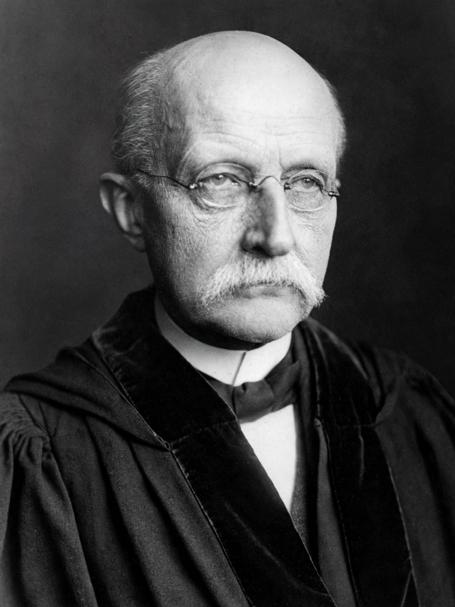

Max Planck
| Born | 23 April 1858, Kiel, Duchy of Holstein |
|---|---|
| Died | 4 October 1947 (aged 89), Göttingen, Germany |
| Known for | Planck's law, Planck constant, Planck units |
| Awards | Nobel Prize in Physics (1918) |

[Image: Portrait photograph of Max Planck in later life, in academic dress]Max Karl Ernst Ludwig Planck (23 April 1858 – 4 October 1947) was a German theoretical physicist whose discovery of energy quanta won him the Nobel Prize in Physics in 1918. He is regarded as the founder of quantum theory, one of the most important physicists of the twentieth century.
Planck made many contributions to theoretical physics, but his fame rests primarily on his role as the originator of quantum theory, which revolutionised human understanding of atomic and subatomic processes. In 1948, the German scientific institution the Kaiser Wilhelm Society (of which Planck was twice president) was renamed the Max Planck Society in his honour.
Early life and career
Planck was born in Kiel, then in the Duchy of Holstein, into an academic family; his father was a professor of law. He studied physics at the universities of Munich and Berlin, where his teachers included Hermann von Helmholtz and Gustav Kirchhoff, and received his doctorate in 1879. He became a professor at Kiel in 1885 and succeeded Kirchhoff at Berlin in 1889, remaining there until his retirement in 1926.
Black-body radiation and the quantum hypothesis
In the 1890s Planck turned to the problem of black-body radiation: the spectrum of light emitted by an idealised hot object, which classical physics could not reproduce (the so-called ultraviolet catastrophe). On 14 December 1900 he presented a derivation of the radiation law that fit the experimental data, based on the assumption that energy is emitted in discrete packets — quanta — proportional to the frequency of radiation, E = hν. The constant of proportionality, h, is now called the Planck constant.
Planck initially regarded the quantum as a mathematical device, but Albert Einstein's 1905 explanation of the photoelectric effect treated quanta of light as physically real, and quantum theory developed rapidly thereafter with the work of Niels Bohr, Werner Heisenberg, Erwin Schrödinger and many others.
Later life
Planck was a central figure in German science between the wars. He remained in Germany during the Nazi period and attempted, with limited success, to protect Jewish colleagues and institutions; he made a personal appeal to Hitler in 1933 on behalf of the chemist Fritz Haber. His son Erwin was executed in 1945 for his part in the 20 July plot against Hitler.
Planck died in Göttingen on 4 October 1947. His name is attached to the Planck scale of length, time and mass, to Planck's law, and to the Max Planck Institutes that remain Germany's leading basic-research organisation.